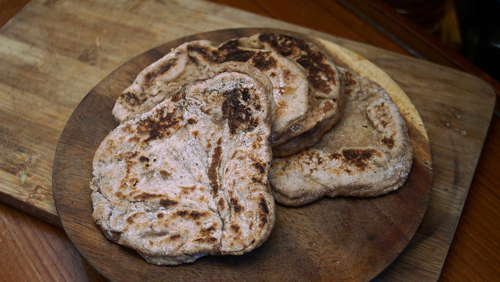
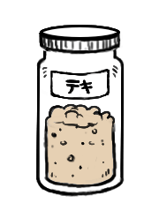

sourdough spelt flatbread
12 flatbreads — 30 minutes
Sourdough flatbreads are the more complex version of my quick flat bread recipe. The added complexity is a small price to pay for a delicious, sour pita.
I like to use 100% spelt flour, but for a better rise add up to 2 cups of all purpose and 1 cup of spelt flour (note: my starter is also 100% spelt). Spelt has more gluten than some other ancient grains, like einkorn. It's also higher in protein than whole wheat flour, and has a pleasant, nutty flavor. Substitute spelt 1:1 with whole wheat flour.
Sourdough starter
I've already written detailed instructions on how to make a sourdough starter, read about the process here. The starter used in this recipe is 100% hydration, which means it is equal parts of water to flour by weight.
Changing flour ratios:
If you want to change the quantity of flour, to make more or fewer flatbreads, use the 3-2-1 (flour-water-starter) plan to measure out the amount of water and starter:
3 parts flour: 2 parts water: 1 part starter at 100% hydration.
For example, say I'm starting with 450g of flour, then I'll need...
450 / 1.5 = 300 g water
450 / 3 = 150 g starter
 spelt flour340 g
spelt flour340 g salt5 g
salt5 g- starter110 g
 olive oil15 ml
olive oil15 ml water220 ml
water220 ml
dough
- In a large bowl, mix 340 g (3 cups) of spelt flour, 5 g (1 tsp) of salt, 110 g (1 cup) of ripe (fed) sourdough starter, 15 ml (1 tbsp) of olive oil and 220 ml (bit less than 1 cup) of lukewarm water. Stir into a cohesive dough. Add extra flour if the dough is too sticky, or more water if too dry.
- Cover the bowl, and let the dough rest anywhere from 8 hours+. Ideally, prepare the dough in the evening and let it rest overnight.
- Next morning:, turn the dough onto a well-floured surface, and divide into 12 balls. To get equal pieces, cut the dough into a pie and roll each wedge into a ball. Allow the balls of dough to rest for 10 minutes.
- In the meantime, preheat a cast iron pan at medium-heat.
- Sprinkle a lot of flour on your working surface, and roll out your first ball to a thickness of about 6 mm (1/4 in). If dough sticks to your rolling pin, add a light coat of oil over its surface.
- Transfer dough to hot cast iron pan, and cook on each side for 1-2 minutes.
- Transfer cooked flatbread to a cooling rack, or towel, and repeat for the rest of the dough balls. When cool, cover flatbreads so they don't dry out.